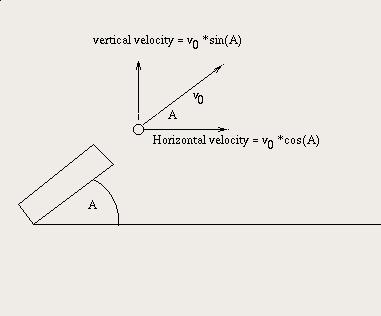

In
this lab, you will be working
in pairs.
The idea is that one person will sit at the keyboard and the other will
sit at
the desk next to the keyboard person. The person working at the desk
will be
responsible for doing things like drawing diagrams, suggesting ideas
for
solving the problem, and watching as the keyboard person enters the
program.
Both programmers should take part in designing the program and should
continuously interact as the programming is done. The "two heads are
better than one" idea is paramount here and there is growing evidence
that
pair programming is more efficient in producing working programs. (In
our case,
we are most interested in increasing learning and the idea is that each
member
of the pair will likely have ideas and understanding of concepts that
the other
lacks so that the net effect is more learning going on.)
The keyboard person stays doing the keyboard for the entire lab and the
desk
person stays doing his or her "job" for the entire lab. In the next
lab, the same partners will work together but they will change places.
Suppose
that a cannon ball is shot from a cannon at an angle A as
pictured below. The ball
will shoot out at that angle and will eventually crash to earth. If the
ball
shoots at an initial velocity of v0,
and if the
acceleration of gravity is 9.8 meters per second per second, then the
vertical
component of velocity vvert, will be, as shown in the
diagram below, v0*sin(A)
and the horizontal component, vhoriz,
will be, as
shown, v0*cos(A). Then the formula for the height of the cannon ball after t
seconds (i.e. height(v0,
A, t))
will be:
v0*sin(A)*t
- G*t*t/2
where height(v0,
A, t) is the
height in meters after t
seconds, t is the time elapsed in seconds, A is the
angle in radians, G is the acceleration of
gravity is 9.8 meters/second/second, and v0 is the velocity in meters per
second.
Similarly, the formula for the horizontal distance the cannon has
moved
after t
seconds, horiz(v0,
A, t), is
v0*cos(A)*t
as long as
t
isn't
greater than the time when the cannonball hits the ground.

Complete
the provided template class, Cannon.java, by adding methods height(v0,
A, t) and horiz(v0,
A, t). Then
test those methods by calling those methods in onMouseClick
with some
values for v0 and
A
and print
out the results using Text
objects. That is, assuming
you have created the method:
public
double height(double v0, double A, double
t) {
........
}
then you can
test it by typing something like the following in the onMouseClick method:
new
Text("Height is " +
height(15,1.0,4),40,40,canvas);
It is advisable to use constants for your test values such as
private
static final double VEL_0 = 15;
private static final double ANGLE = 1;
private static final double TIME = 4;
private
static final double GRAVITY = 9.8;
and
test your cases as new
Text("Height is " +
height(VEL_0,ANGLE,TIME),40,40,canvas); instead
Do
several tests of your two methods by doing several lines of new
Text with
different values for the parameters. Note that Math.sin
and Math.cos are methods you will need to
use. Note also that the angles fed to Math.sin
and Math.cos are in radians so the angle
runs from 0 to PI/2 or from 0 to 1.570796327. (Recall that 0 to PI/2 in
radians
corresponds to 0 to 90 degrees.)
We are
extremely interested, in general, in finding out when that cannon ball
hits the
ground. But, when the cannonball hits the ground, that means height(t)=0. This means solving the
equation for t where
0=v0*sin(A)*t
- G*t*t/2
Solve this
equation for t
(actually, there are two solutions - one is t=0 so
get rid of that one by
dividing both sides by t and
then solving for t) and write a new method that
will find the t
for hitting the ground. That is, a method:
public
double timeToHit(double v0, dougle A) {
....
}
Then, find how far this cannonball traveled by substituting that value
of t into the formula for horiz(v0,
A, t) inside
a method:
public
double
distanceToHit(double v0,double A) {
...
}
For example, if you we know that t was
1, you would then say
that the cannonball hit the ground at horiz(v0,
A, 1)=v0*cos(A)*1=v0*cos(A). Thus, this new method
should take as input v0 and A and should return the
horizontal distance where the cannonball hits the ground. Of course,
the time
to hit has already been determined in the previous method timeToHit
(...).
Again, make your onMouseClick program compute the place where the ball hits the ground
and print it using Text.
Here are some tests to try.
If v0=15, A=1.0,
and t=2 we have height(v0,A,t)=5.64... , horiz(v0,A,t)=16.209..., timeToHit(v0,A)=2.575..., and distanceToHit(v0,A)=20.876....
If v0=15, A=1.0, and t=4 we get height(v0,A,t)=-27.91... and horiz(v0,A,t)=32.418...
If v0=15 and A=1.570796326 then timeToHit(v0,A)=3.06... and distanceToHit(v0,A)=3.65... x 10-8 or
almost 0.
Try v0=10000 and A=0.785
and find TimeToHit
and distanceToHit. You should get TimeToHit=1442.5003
distanceToHit=1.0204
As usual, when you are done with the in-lab exercises above, have your lab instructor or TA check over your work before you leave the lab. For this lab, I would like you to also turn in your work electronically. When you have the lab working correctly, create a new folder inside your Lab05 folder and give it a name similar in format to MillerJohn_and_SchnepfJim_Lab05 only using your name and your partners name. Copy all Java files from your Lab05 folder and put them in the newly created folder (but keep the old copies in their place as back up). If you are not finished during lab time, finish the assignment prior to coming to the next lab and put a copy of your newly renamed folder into the /usr/people/handins/161LabHandin folder before the start of the next lab period. You can use the cp command or copy and paste to hand in your work. . Also, be kind enough and email a copy of your joint work to your teammate.
Included with this lab is a program to do the Turtle/Rabbit race using the provided Turtle class. Your assignment is to design a Rabbit class that will look somewhat vaguely rabbit-like but otherwise do what the Turtle class does. Once done with your Rabbit class, modify the Race class so that your new Rabbit class participates in the race instead of the gray box. Then, add an audience of Rabbits to cheer against the shown audience of Turtles. Start by running the Race class in order to understand what your Rabbit is supposed to do.
When you have completed the project, place a copy of your project folder, named similar to MillerJohnLab5Project into the /usr/people/handins/161ProjectHandin folder before the start of the next lab.